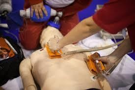
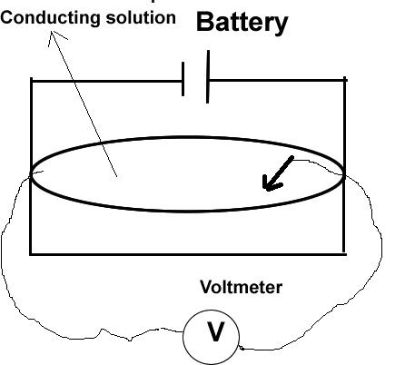

This lesson is an AI-assisted, low-friction introduction. It is not scientific-grade material; its purpose is to build a working framework before the lecture and the lab session.
Mapping of Equipotential Lines
Aim
To map equipotential lines in an electric field.
Learning outcomes
By the end of this session, students should be able to:
Measure the potential difference at various points in an electric field.
Map equipotential lines in an electric field.
Represent the data accurately and graphically.
What are equipotential lines?
Every point in an electric field has an electric potential (measured in volts). An equipotential line joins all the points that have the same potential, like a contour line on a map joins points of the same height.
Equipotential through the probe —
Field line through the probe
Field lines
Show the direction of the force on a positive charge.
Run from the + plate to the − plate (high to low potential).
Closer together where the field is stronger.
Equipotential lines
Join points at the same potential; a voltmeter reads the same value all along one.
Always cross field lines at right angles.
No work is done moving a charge along one (ΔV = 0, so W = qΔV = 0).
Two equipotential lines never cross: one point cannot have two different potentials. Between the middle of the two plates the lines are almost straight and evenly spaced (a nearly uniform field); beyond the plate ends they bend outward.
Medical perspectives
The body is a conducting medium, much like the salt solution in the lab tray. The same picture of potentials, field lines and equipotentials explains how several medical devices work.
Electric fields in body tissues
Nerve and muscle cells hold a voltage across their membranes. When the heart contracts, its activity sets up an electric field through the chest. ECG electrodes on the skin read the potential difference between points on this field, the same measurement the probe makes in the lab tray.

Defibrillation
A defibrillator is a medical device that delivers a high-energy electric shock to the heart. Pads are placed so the field lines between them pass through the heart muscle, so that enough of the heart is depolarised at once to reset its rhythm.
Electrotherapy
Devices such as TENS (transcutaneous electrical nerve stimulation) pass small currents between skin electrodes to stimulate nerves or muscles. The field pattern shows which tissue the current actually reaches.
Designing medical electrodes
Field lines crowd at the edges of an electrode, so current density is highest there. Larger pads and conductive gel spread the current more evenly, which lowers the risk of skin burns and gives cleaner signals.
Method

Experimental setup from the lab manual: battery across the plates, voltmeter with a moving probe in the conducting solution.The reference lead stays on the − plate (0 V). The meter shows the potential of wherever the probe tip touches.Move the probe until the meter reads the chosen value (here 2.0 V), note (x, y), then find more points with the same reading.Repeat for three more values (here 1, 4 and 5 V), giving four sets of points.Tabulate the points, then join each set with a smooth curve and label it with its voltage.
Formula: Coulomb's law
F ∝q1 q2r2
F = k q1 q2r2
F
electric force between the charges (N)
q1, q2
the two charges, in coulombs (C)
r
distance between the charges (m)
k
≈ 8.99 × 109 N·m²/C²
Unit of charge: the coulomb (C). Like charges repel, unlike charges attract.
F = —
—
Link to this lab
Force per unit charge is the electric field: E = F / q. Field lines show its direction.
Potential difference is work per unit charge: V = W / q, in volts (1 V = 1 J/C).
Along an equipotential line ΔV = 0, so moving a charge along it needs no work. That is why field lines cross equipotentials at 90°.
Field strength ≈ ΔV / Δd: where equipotential lines are closer, the field is stronger.
Observation & graph
Example values. Tray 30 cm × 20 cm; − plate at x = 6 cm, + plate at x = 24 cm (both from y = 6 to 14 cm); 6 V battery; reference probe on the − plate.
V (volt)
(X1, Y1)
(X2, Y2)
(X3, Y3)
(X4, Y4)
Coordinates in cm, measured from the bottom-left corner of the tray.
Each row of the table is one equipotential line; the four points are joined by a smooth curve.
Between the plates the lines are almost straight and parallel to the plates.
Beyond the plate ends (y below 6 cm or above 14 cm) the lines bend outward and wrap toward the plate they are closest to.
The 1 V and 5 V lines stay close to their plates; a 3 V line would sit exactly midway at x = 15 cm.
MCQs
0 correct
Practical
Move the probe through the solution and watch the voltmeter. Click to record a point when the reading matches the target voltage of the highlighted row.